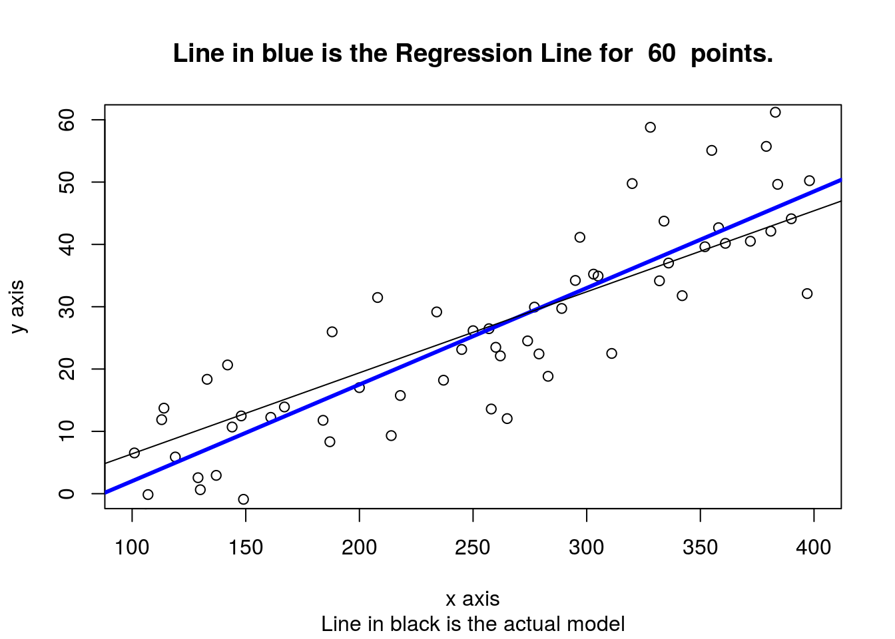
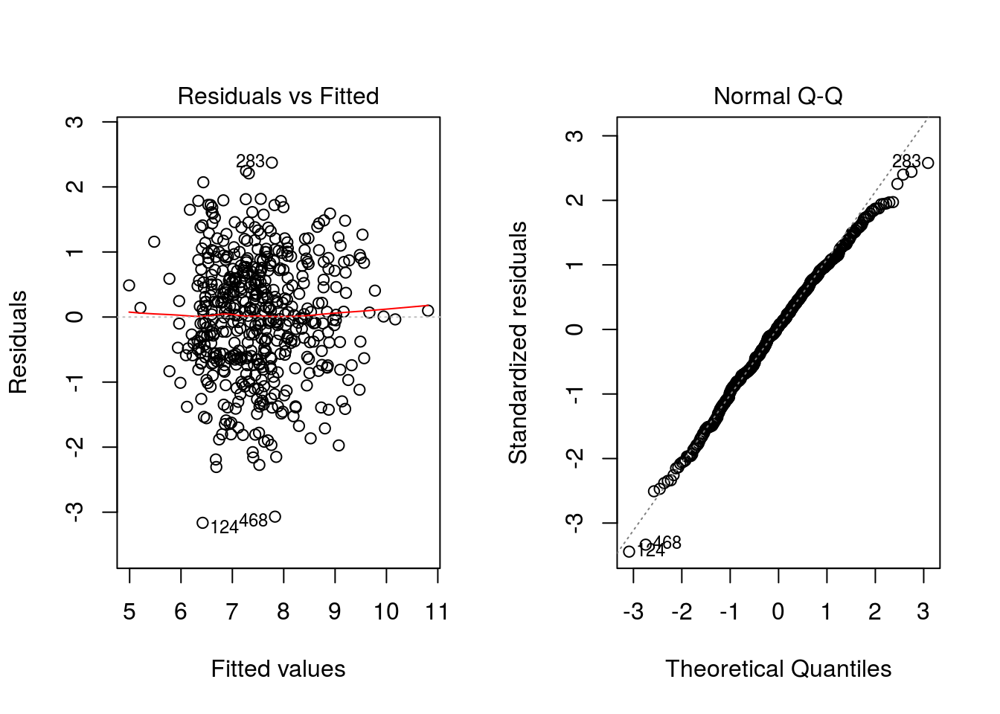
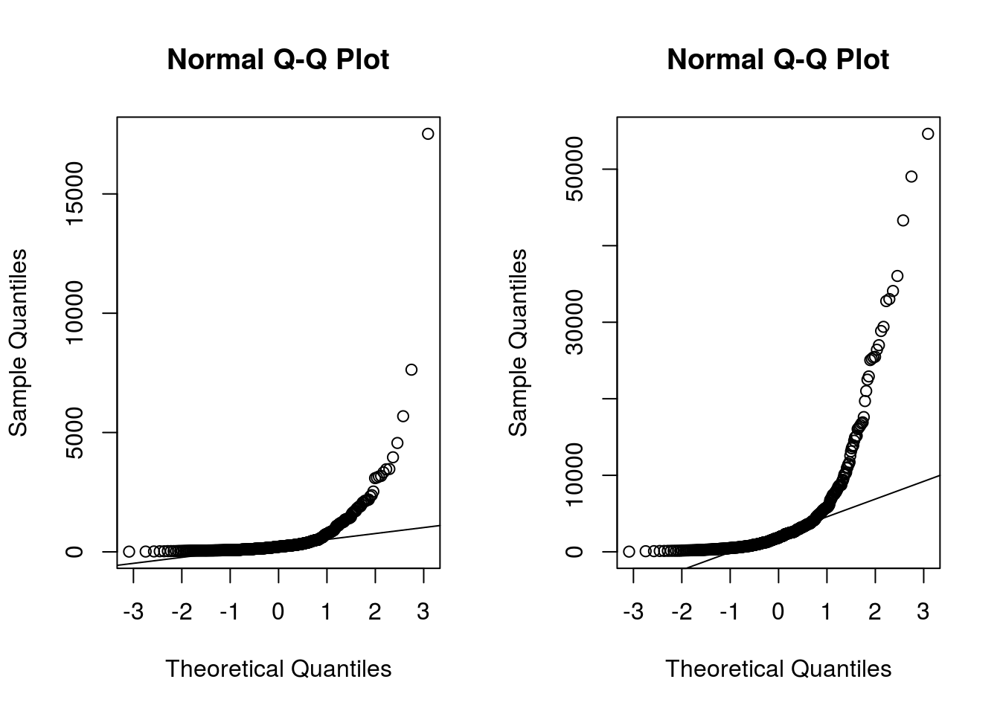
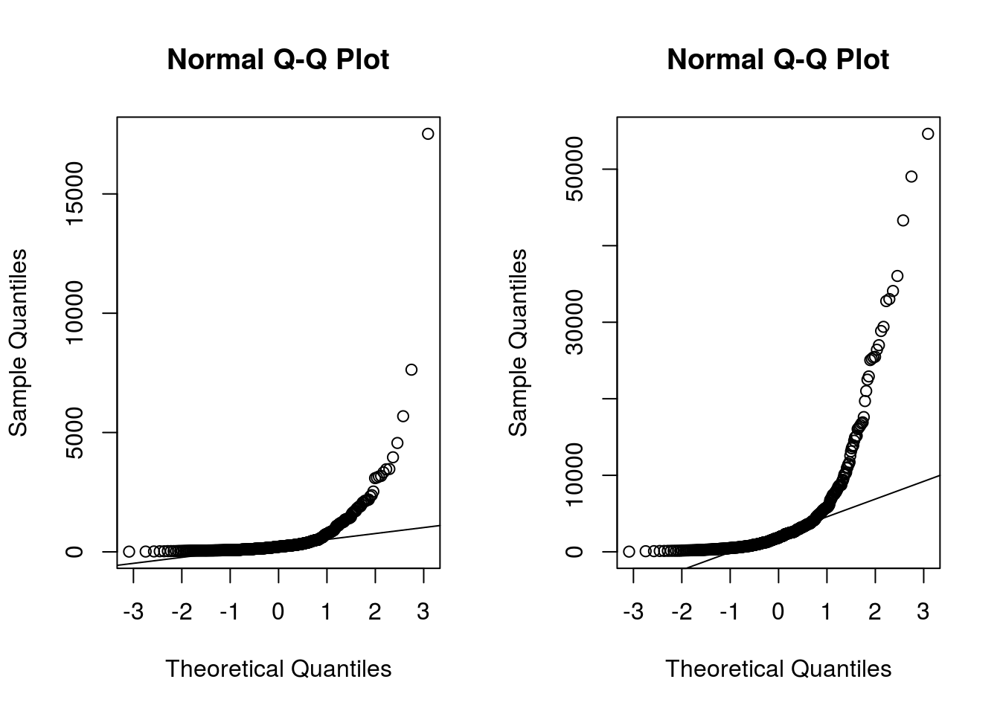

Chapter 9 Supervised Classification
A classification problem can be defined as the induction, from a dataset \(\cal D\), of a classification function \(\psi\) that, given the attribute vector of an instance/example, returns a class \({c}\). A regression problem, on the other hand, returns an numeric value.
Dataset, \(\cal D\), is typically composed of \(n\) attributes and a class attribute \(C\).
| \(Att_1\) | … | Attn | C |
|---|---|---|---|
| \(a_{11}\) | … | a1n | c1 |
| \(a_{21}\) | … | a2n | c2 |
| … | … | … | … |
| \(a_{m1}\) | … | amn | cm |
Columns are usually called attributes and there is class attribute, which can be numeric or discrete. When the class is numeric, it is a regression problem. With discrete values, we talk about binary (two values) classification or multi-label classification
9.1 Regression
9.1.1 Linear Regression
- This procedure fits a straight line to the data. The idea is that the independent variable x is something the experimenter controls and the dependent variable y is something that the experimenter measures. The line is used to predict the value of y for a known value of x. The variable x is the predictor variable and y the response variable.
First proposed many years ago. But still very useful…

Galton Data
- The equation takes the form \(\hat{y}=b_0+b_1 * x\)
The method used to choose the values \(b_0\) and \(b_1\) is to minimize the sum of the squares of the residual errors.
9.2 Regression: Galton Data
Not related to Software Engineering but …
library(UsingR); data(galton)## Loading required package: MASS##
## Attaching package: 'MASS'## The following object is masked from 'package:dplyr':
##
## select## The following object is masked from 'package:sm':
##
## muscle## Loading required package: HistData## Loading required package: Hmisc## Loading required package: survival##
## Attaching package: 'survival'## The following object is masked from 'package:caret':
##
## cluster## Loading required package: Formula##
## Attaching package: 'Hmisc'## The following objects are masked from 'package:dplyr':
##
## combine, src, summarize## The following objects are masked from 'package:base':
##
## format.pval, round.POSIXt, trunc.POSIXt, units##
## Attaching package: 'UsingR'## The following object is masked _by_ '.GlobalEnv':
##
## galton## The following object is masked from 'package:survival':
##
## cancerpar(mfrow=c(1,2))
hist(galton$child,col="blue",breaks=100)
hist(galton$parent,col="blue",breaks=100)
plot(galton$parent,galton$child,pch=1,col="blue", cex=0.4)
lm1 <- lm(galton$child ~ galton$parent)
lines(galton$parent,lm1$fitted,col="red",lwd=3)
plot(galton$parent,lm1$residuals,col="blue",pch=1, cex=0.4)
abline(c(0,0),col="red",lwd=3)
qqnorm(galton$child)
9.3 Linear Regression Diagnostics
- Several plots help to evaluate the suitability of the linear regression
- Residuals vs fitted: The residuals should be randomly distributed around the horizontal line representing a residual error of zero; that is, there should not be a distinct trend in the distribution of points.
- Standard Q-Q plot: residual errors are normally distributed
- Square root of the standardized residuals vs the fitted values: there should be no obvious trend.
- Leverage: measures the importance of each point in determining the regression result. Smaller values means that removing the observation has little effect on the regression result.
9.4 Linear regression
9.4.1 Effort estimation
Fitting a linear model to log-log - the predictive power equation is \(y= e^{b_0 + b_1 log(x)}\), ignoring the bias corrections - First, we are fitting the model to the whole dataset. But it is not the right way to do it, because of overfitting.
library(foreign)
china <- read.arff("./datasets/effortEstimation/china.arff")
china_size <- china$AFP
summary(china_size)## Min. 1st Qu. Median Mean 3rd Qu. Max.
## 9 100 215 487 438 17500china_effort <- china$Effort
summary(china_effort)## Min. 1st Qu. Median Mean 3rd Qu. Max.
## 26 704 1830 3920 3830 54600par(mfrow=c(1,2))
hist(china_size, col="blue", xlab="Adjusted Function Points", main="Distribution of AFP")
hist(china_effort, col="blue",xlab="Effort", main="Distribution of Effort")
boxplot(china_size)
boxplot(china_effort)
qqnorm(china_size)
qqline(china_size)
qqnorm(china_effort)
qqline(china_effort)


linmodel_logchina <- lm(logchina_effort ~ logchina_size)
par(mfrow=c(1,1))
plot(logchina_size, logchina_effort)
abline(linmodel_logchina, lwd=3, col=3)
par(mfrow=c(1,2))
plot(linmodel_logchina, ask = FALSE) 

linmodel_logchina##
## Call:
## lm(formula = logchina_effort ~ logchina_size)
##
## Coefficients:
## (Intercept) logchina_size
## 3.301 0.7689.5 Supervised Classification
Here we will use defect prediction as ensample of several machine learning techniques.
No Free Lunch theorem In the absence of any knowledge about the prediction problem, no model can be said to be uniformly better than any other
There are hundreds of packages to perform classification task in R, but many of those can be used throught ‘caret’ which helps with many of the data mining process task as described next.
9.5.1 The caret package
The caret (Classification And REgression Training) package provides a unified interface for modeling and prediction with around 150 different models with tools for:
+ data splitting
+ pre-processing
+ feature selection
+ model tuning using resampling
+ variable importance estimation, etc.Website: http://caret.r-forge.r-project.org
JSS Paper: www.jstatsoft.org/v28/i05/paper
9.5.2 Defect Prediction as a running example
We will show the use of different classification techniques in the problem of defect prediction.
Different datasets are composed of classical metrics (Halstead or McCabe metrics) based on counts of operators/operands and like or object-oriented metrics (e.g. Chidamber and Kemerer) and the class attribute indicating whether the module or class was defective.
For example, using one of the NASA datasets used extensively in defect prediction:
library(caret)
library(foreign)
kc1 <- read.arff("./datasets/defectPred/D1/KC1.arff")
str(kc1)## 'data.frame': 2096 obs. of 22 variables:
## $ LOC_BLANK : num 0 0 0 0 2 0 0 0 0 2 ...
## $ BRANCH_COUNT : num 1 1 1 1 1 1 1 1 1 1 ...
## $ LOC_CODE_AND_COMMENT : num 0 0 0 0 0 0 0 0 0 0 ...
## $ LOC_COMMENTS : num 0 0 0 0 0 0 0 0 0 0 ...
## $ CYCLOMATIC_COMPLEXITY: num 1 1 1 1 1 1 1 1 1 1 ...
## $ DESIGN_COMPLEXITY : num 1 1 1 1 1 1 1 1 1 1 ...
## $ ESSENTIAL_COMPLEXITY : num 1 1 1 1 1 1 1 1 1 1 ...
## $ LOC_EXECUTABLE : num 3 1 1 1 8 3 1 1 1 9 ...
## $ HALSTEAD_CONTENT : num 11.6 0 0 0 18 ...
## $ HALSTEAD_DIFFICULTY : num 2.67 0 0 0 3.5 2.67 0 0 0 3.75 ...
## $ HALSTEAD_EFFORT : num 82.3 0 0 0 220.9 ...
## $ HALSTEAD_ERROR_EST : num 0.01 0 0 0 0.02 0.01 0 0 0 0.04 ...
## $ HALSTEAD_LENGTH : num 11 1 1 1 19 11 1 1 1 29 ...
## $ HALSTEAD_LEVEL : num 0.38 0 0 0 0.29 0.38 0 0 0 0.27 ...
## $ HALSTEAD_PROG_TIME : num 4.57 0 0 0 12.27 ...
## $ HALSTEAD_VOLUME : num 30.9 0 0 0 63.1 ...
## $ NUM_OPERANDS : num 4 0 0 0 7 4 0 0 0 10 ...
## $ NUM_OPERATORS : num 7 1 1 1 12 7 1 1 1 19 ...
## $ NUM_UNIQUE_OPERANDS : num 3 0 0 0 5 3 0 0 0 8 ...
## $ NUM_UNIQUE_OPERATORS : num 4 1 1 1 5 4 1 1 1 6 ...
## $ LOC_TOTAL : num 5 3 3 3 12 5 3 3 3 13 ...
## $ Defective : Factor w/ 2 levels "N","Y": 1 1 1 1 1 1 1 1 1 1 ...Then we need to divide the data into training and testing.
# Split data into training and test datasets
set.seed(1)
inTrain <- createDataPartition(y=kc1$Defective,p=.75,list=FALSE)
kc1.train <- kc1[inTrain,]
kc1.test <- kc1[-inTrain,]Another approach to dividing the data:
# Split data into training and test datasets
set.seed(1)
ind <- sample(2, nrow(kc1), replace = TRUE, prob = c(0.75, 0.25))
kc1.train <- kc1[ind==1, ]
kc1.test <- kc1[ind==2, ]9.6 Linear Discriminant Analysis (LDA)
One classical approach to classification is Linear Discriminant Analysis (LDA). And the basic all would be as follows.
ldaModel <- train (Defective ~ ., data=kc1.train, method="lda", preProc=c("center","scale"))
ldaModel## Linear Discriminant Analysis
##
## 1573 samples
## 21 predictors
## 2 classes: 'N', 'Y'
##
## Pre-processing: centered (21), scaled (21)
## Resampling: Bootstrapped (25 reps)
## Summary of sample sizes: 1573, 1573, 1573, 1573, 1573, 1573, ...
## Resampling results:
##
## Accuracy Kappa
## 0.855 0.286
##
## We can observe that we are training our model using Defective ~ . as a formula were ’Defective is the class variable separed by ~ and the ´.´ means the rest of the variables. Also, we are using a filter for the training data to (preProc) to center and scale.
Also, as stated in the documentation about the train method : > http://topepo.github.io/caret/training.html
ctrl <- trainControl(method = "repeatedcv",repeats=3)
ldaModel <- train (Defective ~ ., data=kc1.train, method="lda", trControl=ctrl, preProc=c("center","scale"))
ldaModel## Linear Discriminant Analysis
##
## 1573 samples
## 21 predictors
## 2 classes: 'N', 'Y'
##
## Pre-processing: centered (21), scaled (21)
## Resampling: Cross-Validated (10 fold, repeated 3 times)
## Summary of sample sizes: 1416, 1416, 1415, 1416, 1415, 1416, ...
## Resampling results:
##
## Accuracy Kappa
## 0.854 0.288
##
## Instead of accuracy we can activate other metrics using summaryFunction=twoClassSummary such as ROC, sensitivity and specificity. To do so, we also need to speficy classProbs=TRUE.
ctrl <- trainControl(method = "repeatedcv",repeats=3, classProbs=TRUE,
summaryFunction=twoClassSummary)
ldaModel3xcv10 <- train (Defective ~ ., data=kc1.train, method="lda", trControl=ctrl, preProc=c("center","scale"))
ldaModel3xcv10## Linear Discriminant Analysis
##
## 1573 samples
## 21 predictors
## 2 classes: 'N', 'Y'
##
## Pre-processing: centered (21), scaled (21)
## Resampling: Cross-Validated (10 fold, repeated 3 times)
## Summary of sample sizes: 1416, 1416, 1416, 1416, 1416, 1415, ...
## Resampling results:
##
## ROC Sens Spec
## 0.789 0.962 0.26
##
## Most methods have parameters that need to be optimised and that is one of the
plsFit3x10cv <- train (Defective ~ ., data=kc1.train, method="pls", trControl=trainControl(classProbs=TRUE), metric="ROC", preProc=c("center","scale"))
plsFit3x10cv## Partial Least Squares
##
## 1573 samples
## 21 predictors
## 2 classes: 'N', 'Y'
##
## Pre-processing: centered (21), scaled (21)
## Resampling: Bootstrapped (25 reps)
## Summary of sample sizes: 1573, 1573, 1573, 1573, 1573, 1573, ...
## Resampling results across tuning parameters:
##
## ncomp Accuracy Kappa
## 1 0.841 0.112
## 2 0.851 0.166
## 3 0.852 0.191
##
## Accuracy was used to select the optimal model using the largest value.
## The final value used for the model was ncomp = 3.plot(plsFit3x10cv)
The parameter tuneLength allow us to specify the number values per parameter to consider.
plsFit3x10cv <- train (Defective ~ ., data=kc1.train, method="pls", trControl=ctrl, metric="ROC", tuneLength=5, preProc=c("center","scale"))
plsFit3x10cv## Partial Least Squares
##
## 1573 samples
## 21 predictors
## 2 classes: 'N', 'Y'
##
## Pre-processing: centered (21), scaled (21)
## Resampling: Cross-Validated (10 fold, repeated 3 times)
## Summary of sample sizes: 1415, 1416, 1417, 1415, 1416, 1416, ...
## Resampling results across tuning parameters:
##
## ncomp ROC Sens Spec
## 1 0.788 0.981 0.0929
## 2 0.793 0.984 0.1311
## 3 0.790 0.982 0.1517
## 4 0.790 0.986 0.1626
## 5 0.789 0.985 0.1596
##
## ROC was used to select the optimal model using the largest value.
## The final value used for the model was ncomp = 2.plot(plsFit3x10cv)
Finally to predict new cases, caret will use the best classfier obtained for prediction.
plsProbs <- predict(plsFit3x10cv, newdata = kc1.test, type = "prob")plsClasses <- predict(plsFit3x10cv, newdata = kc1.test, type = "raw")
confusionMatrix(data=plsClasses,kc1.test$Defective)## Confusion Matrix and Statistics
##
## Reference
## Prediction N Y
## N 439 69
## Y 3 12
##
## Accuracy : 0.862
## 95% CI : (0.83, 0.891)
## No Information Rate : 0.845
## P-Value [Acc > NIR] : 0.152
##
## Kappa : 0.212
## Mcnemar's Test P-Value : 1.85e-14
##
## Sensitivity : 0.993
## Specificity : 0.148
## Pos Pred Value : 0.864
## Neg Pred Value : 0.800
## Prevalence : 0.845
## Detection Rate : 0.839
## Detection Prevalence : 0.971
## Balanced Accuracy : 0.571
##
## 'Positive' Class : N
## 9.6.1 Predicting the number of defects (numerical class)
From the Bug Predictiono Repository http://bug.inf.usi.ch/download.php
Some datasets contain CK and other 11 object oriented metrics for the last version of the system plus categorized (with severity and priority) post-release defects. Using such dataset:
jdt <- read.csv("./datasets/defectPred/BPD/single-version-ck-oo-EclipseJDTCore.csv", sep=";")
# We just use the number of bugs, so we removed others
jdt$classname <- NULL
jdt$nonTrivialBugs <- NULL
jdt$majorBugs <- NULL
jdt$minorBugs <- NULL
jdt$criticalBugs <- NULL
jdt$highPriorityBugs <- NULL
jdt$X <- NULL
# Caret
library(caret)
# Split data into training and test datasets
set.seed(1)
inTrain <- createDataPartition(y=jdt$bugs,p=.8,list=FALSE)
jdt.train <- jdt[inTrain,]
jdt.test <- jdt[-inTrain,]ctrl <- trainControl(method = "repeatedcv",repeats=3)
glmModel <- train (bugs ~ ., data=jdt.train, method="glm", trControl=ctrl, preProc=c("center","scale"))
glmModel## Generalized Linear Model
##
## 798 samples
## 17 predictors
##
## Pre-processing: centered (17), scaled (17)
## Resampling: Cross-Validated (10 fold, repeated 3 times)
## Summary of sample sizes: 718, 718, 718, 718, 719, 718, ...
## Resampling results:
##
## RMSE Rsquared
## 0.841 0.386
##
## Others such as Elasticnet:
glmnetModel <- train (bugs ~ ., data=jdt.train, method="glmnet", trControl=ctrl, preProc=c("center","scale"))## Loading required package: glmnet## Loading required package: Matrix## Loading required package: foreach## Loaded glmnet 2.0-5glmnetModel## glmnet
##
## 798 samples
## 17 predictors
##
## Pre-processing: centered (17), scaled (17)
## Resampling: Cross-Validated (10 fold, repeated 3 times)
## Summary of sample sizes: 718, 718, 718, 718, 718, 718, ...
## Resampling results across tuning parameters:
##
## alpha lambda RMSE Rsquared
## 0.10 0.0012 0.813 0.341
## 0.10 0.0120 0.818 0.334
## 0.10 0.1202 0.808 0.340
## 0.55 0.0012 0.812 0.341
## 0.55 0.0120 0.823 0.327
## 0.55 0.1202 0.812 0.347
## 1.00 0.0012 0.812 0.341
## 1.00 0.0120 0.819 0.331
## 1.00 0.1202 0.817 0.345
##
## RMSE was used to select the optimal model using the smallest value.
## The final values used for the model were alpha = 0.1 and lambda = 0.12.9.6.2 Binary Logistic Regression (BLR)
Binary Logistic Regression (BLR) can models fault-proneness as follows
\[fp(X) = \frac{e^{logit()}}{1 + e^{logit(X)}}\]
where the simplest form for logit is:
\(logit(X) = c_{0} + c_{1}X\)
jdt <- read.csv("./datasets/defectPred/BPD/single-version-ck-oo-EclipseJDTCore.csv", sep=";")
# Caret
library(caret)
# Convert the response variable into a boolean variable (0/1)
jdt$bugs[jdt$bugs>=1]<-1
cbo <- jdt$cbo
bugs <- jdt$bugs
# Split data into training and test datasets
jdt2 = data.frame(cbo, bugs)
inTrain <- createDataPartition(y=jdt2$bugs,p=.8,list=FALSE)
jdtTrain <- jdt2[inTrain,]
jdtTest <- jdt2[-inTrain,]BLR models fault-proneness are as follows
\[fp(X) = \frac{e^{logit()}}{1 + e^{logit(X)}}\]
where the simplest form for logit is:
\(logit(X) = c_{0} + c_{1}X\)
# logit regression
# glmLogit <- train (bugs ~ ., data=jdt.train, method="glm", family=binomial(link = logit))
glmLogit <- glm (bugs ~ ., data=jdtTrain, family=binomial(link = logit))
summary(glmLogit)##
## Call:
## glm(formula = bugs ~ ., family = binomial(link = logit), data = jdtTrain)
##
## Deviance Residuals:
## Min 1Q Median 3Q Max
## -3.573 -0.613 -0.538 -0.497 2.099
##
## Coefficients:
## Estimate Std. Error z value Pr(>|z|)
## (Intercept) -2.08638 0.13462 -15.50 < 2e-16 ***
## cbo 0.05646 0.00705 8.01 1.1e-15 ***
## ---
## Signif. codes: 0 '***' 0.001 '**' 0.01 '*' 0.05 '.' 0.1 ' ' 1
##
## (Dispersion parameter for binomial family taken to be 1)
##
## Null deviance: 831.84 on 797 degrees of freedom
## Residual deviance: 725.93 on 796 degrees of freedom
## AIC: 729.9
##
## Number of Fisher Scoring iterations: 5Predict a single point:
newData = data.frame(cbo = 3)
predict(glmLogit, newData, type = "response")## 1
## 0.128Draw the results, modified from: http://www.shizukalab.com/toolkits/plotting-logistic-regression-in-r
results <- predict(glmLogit, jdtTest, type = "response")
range(jdtTrain$cbo)## [1] 0 156range(results)## [1] 0.110 0.984plot(jdt2$cbo,jdt2$bugs)
curve(predict(glmLogit, data.frame(cbo=x), type = "response"),add=TRUE)
# points(jdtTrain$cbo,fitted(glmLogit))Another type of graph:
library(popbio)##
## Attaching package: 'popbio'## The following object is masked from 'package:caret':
##
## sensitivitylogi.hist.plot(jdt2$cbo,jdt2$bugs,boxp=FALSE,type="hist",col="gray")
9.7 Classification Trees
There are several packages for inducing classification trees, for example with the party package (recursive partitioning):
# Build a decision tree
library(party)
kc2 <- read.arff("./datasets/defectPred/D1/MC1.arff")
str(kc2)## 'data.frame': 9277 obs. of 39 variables:
## $ LOC_BLANK : num 0 0 0 0 0 0 0 0 0 0 ...
## $ BRANCH_COUNT : num 1 1 1 1 1 1 1 1 1 1 ...
## $ CALL_PAIRS : num 0 0 0 0 0 0 0 0 0 0 ...
## $ LOC_CODE_AND_COMMENT : num 0 0 0 0 0 0 0 0 0 0 ...
## $ LOC_COMMENTS : num 0 0 0 0 0 0 0 0 0 0 ...
## $ CONDITION_COUNT : num 0 0 0 0 0 0 0 0 0 0 ...
## $ CYCLOMATIC_COMPLEXITY : num 1 1 1 1 1 1 1 1 1 1 ...
## $ CYCLOMATIC_DENSITY : num 1 1 1 1 1 1 1 1 1 1 ...
## $ DECISION_COUNT : num 0 0 0 0 0 0 0 0 0 0 ...
## $ DESIGN_COMPLEXITY : num 1 1 1 1 1 1 1 1 1 1 ...
## $ DESIGN_DENSITY : num 1 1 1 1 1 1 1 1 1 1 ...
## $ EDGE_COUNT : num 1 1 1 1 1 1 1 1 1 1 ...
## $ ESSENTIAL_COMPLEXITY : num 1 1 1 1 1 1 1 1 1 1 ...
## $ ESSENTIAL_DENSITY : num 0 0 0 0 0 0 0 0 0 0 ...
## $ LOC_EXECUTABLE : num 0 0 0 0 0 0 0 0 0 0 ...
## $ PARAMETER_COUNT : num 0 0 0 0 0 0 0 0 0 0 ...
## $ GLOBAL_DATA_COMPLEXITY : num 0 0 0 0 0 0 0 0 0 0 ...
## $ GLOBAL_DATA_DENSITY : num 0 0 0 0 0 0 0 0 0 0 ...
## $ HALSTEAD_CONTENT : num 0 0 0 0 0 0 0 0 0 0 ...
## $ HALSTEAD_DIFFICULTY : num 0 0 0 0 0 0 0 0 0 0 ...
## $ HALSTEAD_EFFORT : num 0 0 0 0 0 0 0 0 0 0 ...
## $ HALSTEAD_ERROR_EST : num 0 0 0 0 0 0 0 0 0 0 ...
## $ HALSTEAD_LENGTH : num 1 1 0 0 1 1 0 0 1 1 ...
## $ HALSTEAD_LEVEL : num 0 0 0 0 0 0 0 0 0 0 ...
## $ HALSTEAD_PROG_TIME : num 0 0 0 0 0 0 0 0 0 0 ...
## $ HALSTEAD_VOLUME : num 0 0 0 0 0 0 0 0 0 0 ...
## $ MAINTENANCE_SEVERITY : num 1 1 1 1 1 1 1 1 1 1 ...
## $ MODIFIED_CONDITION_COUNT : num 0 0 0 0 0 0 0 0 0 0 ...
## $ MULTIPLE_CONDITION_COUNT : num 0 0 0 0 0 0 0 0 0 0 ...
## $ NODE_COUNT : num 2 2 2 2 2 2 2 2 2 2 ...
## $ NORMALIZED_CYLOMATIC_COMPLEXITY: num 1 1 1 1 1 1 1 1 1 1 ...
## $ NUM_OPERANDS : num 0 0 0 0 0 0 0 0 0 0 ...
## $ NUM_OPERATORS : num 1 1 0 0 1 1 0 0 1 1 ...
## $ NUM_UNIQUE_OPERANDS : num 0 0 0 0 0 0 0 0 0 0 ...
## $ NUM_UNIQUE_OPERATORS : num 1 1 0 0 1 1 0 0 1 1 ...
## $ NUMBER_OF_LINES : num 1 1 1 1 1 1 1 1 1 1 ...
## $ PERCENT_COMMENTS : num 0 0 0 0 0 0 0 0 0 0 ...
## $ LOC_TOTAL : num 0 0 0 0 0 0 0 0 0 0 ...
## $ Defective : Factor w/ 2 levels "N","Y": 1 1 1 1 1 1 1 1 1 1 ...set.seed(1)
inTrain <- createDataPartition(y=kc2$Defective,p=.60,list=FALSE)
kc2.train <- kc2[inTrain,]
kc2.test <- kc2[-inTrain,]
kc2.formula <- kc2$Defective ~ .
kc2.ctree <- ctree(kc2.formula, data = kc2.train)
# predict on test data
pred <- predict(kc2.ctree, newdata = kc2.test)
# check prediction result
table(pred, kc2.test$Defective)##
## pred N Y
## N 3683 27
## Y 0 0plot(kc2.ctree)
Using the C50, there are two ways, specifying train and testing
library(C50)
c50t <- C5.0(kc1.train[,-ncol(kc1.train)], kc1.train[,ncol(kc1.train)])
summary(c50t)##
## Call:
## C5.0.default(x = kc1.train[, -ncol(kc1.train)], y =
## kc1.train[, ncol(kc1.train)])
##
##
## C5.0 [Release 2.07 GPL Edition] Mon Feb 13 21:14:24 2017
## -------------------------------
##
## Class specified by attribute `outcome'
##
## Read 1573 cases (22 attributes) from undefined.data
##
## Decision tree:
##
## LOC_EXECUTABLE <= 4: N (745/22)
## LOC_EXECUTABLE > 4:
## :...HALSTEAD_ERROR_EST <= 0.36: N (734/169)
## HALSTEAD_ERROR_EST > 0.36:
## :...DESIGN_COMPLEXITY > 19: N (6)
## DESIGN_COMPLEXITY <= 19:
## :...LOC_CODE_AND_COMMENT <= 1: Y (71/22)
## LOC_CODE_AND_COMMENT > 1: N (17/4)
##
##
## Evaluation on training data (1573 cases):
##
## Decision Tree
## ----------------
## Size Errors
##
## 5 217(13.8%) <<
##
##
## (a) (b) <-classified as
## ---- ----
## 1307 22 (a): class N
## 195 49 (b): class Y
##
##
## Attribute usage:
##
## 100.00% LOC_EXECUTABLE
## 52.64% HALSTEAD_ERROR_EST
## 5.98% DESIGN_COMPLEXITY
## 5.59% LOC_CODE_AND_COMMENT
##
##
## Time: 0.1 secsplot(c50t)
c50tPred <- predict(c50t, kc1.train)
table(c50tPred, kc1.train$Defective)##
## c50tPred N Y
## N 1307 195
## Y 22 49or using the formula approach:
# Using the formula notation
c50t2 <- C5.0(Defective ~ ., kc1.train)
c50tPred2 <- predict(c50t2, kc1.train)
table(c50tPred2, kc1.train$Defective)##
## c50tPred2 N Y
## N 1307 195
## Y 22 49Using the ‘rpart’ package
# Using the 'rpart' package
library(rpart)
kc1.rpart <- rpart(Defective ~ ., data=kc1.train)
plot(kc1.rpart)
library(rpart.plot)
#asRules(kc1.rpart)
#fancyRpartPlot(kc1.rpart)9.8 Rules
C5 Rules
library(C50)
c50r <- C5.0(kc1.train[,-ncol(kc1.train)], kc1.train[,ncol(kc1.train)], rules = TRUE)
summary(c50r)##
## Call:
## C5.0.default(x = kc1.train[, -ncol(kc1.train)], y =
## kc1.train[, ncol(kc1.train)], rules = TRUE)
##
##
## C5.0 [Release 2.07 GPL Edition] Mon Feb 13 21:14:26 2017
## -------------------------------
##
## Class specified by attribute `outcome'
##
## Read 1573 cases (22 attributes) from undefined.data
##
## Rules:
##
## Rule 1: (1479/191, lift 1.0)
## HALSTEAD_ERROR_EST <= 0.36
## -> class N [0.870]
##
## Rule 2: (94/41, lift 3.6)
## HALSTEAD_ERROR_EST > 0.36
## -> class Y [0.563]
##
## Default class: N
##
##
## Evaluation on training data (1573 cases):
##
## Rules
## ----------------
## No Errors
##
## 2 232(14.7%) <<
##
##
## (a) (b) <-classified as
## ---- ----
## 1288 41 (a): class N
## 191 53 (b): class Y
##
##
## Attribute usage:
##
## 100.00% HALSTEAD_ERROR_EST
##
##
## Time: 0.0 secsc50rPred <- predict(c50r, kc1.train)
table(c50rPred, kc1.train$Defective)##
## c50rPred N Y
## N 1288 191
## Y 41 539.9 Distanced-based Methods
IB1 and IB-k
library(class)
ind <- sample(2, nrow(iris), replace=T, prob=c(0.7, 0.3))
kc1.train <- kc1[ind==1, ]
kc1.test <- kc1[ind==2, ]
m1 <- knn(train=kc1.train[,-22], test=kc1.test[,-22], cl=kc1.train[,22], k=3)
table(kc1.test[,22],m1)## m1
## N Y
## N 455 24
## Y 64 159.10 Probabilistic Methods
9.10.1 Naive Bayes
Using the klaR package with caret:
library(caret)
library(klaR)
model <- NaiveBayes(Defective ~ ., data = kc1.train)
predictions <- predict(model, kc1.test[,-22])
confusionMatrix(predictions$class, kc1.test$Defective)## Confusion Matrix and Statistics
##
## Reference
## Prediction N Y
## N 442 53
## Y 37 26
##
## Accuracy : 0.839
## 95% CI : (0.806, 0.868)
## No Information Rate : 0.858
## P-Value [Acc > NIR] : 0.917
##
## Kappa : 0.275
## Mcnemar's Test P-Value : 0.114
##
## Sensitivity : 0.923
## Specificity : 0.329
## Pos Pred Value : 0.893
## Neg Pred Value : 0.413
## Prevalence : 0.858
## Detection Rate : 0.792
## Detection Prevalence : 0.887
## Balanced Accuracy : 0.626
##
## 'Positive' Class : N
## Using the e1071 package:
library (e1071)
n1 <-naiveBayes(kc1.train$Defective ~ ., data=kc1.train)
# Show first 3 results using 'class'
head(predict(n1,kc1.test, type = c("class")),3) # class by default## [1] N N N
## Levels: N Y# Show first 3 results using 'raw'
head(predict(n1,kc1.test, type = c("raw")),3)## N Y
## [1,] 1 2.40e-09
## [2,] 1 5.76e-09
## [3,] 1 5.76e-099.10.2 Bayesian Networks
To Do